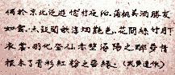

Cuộc Bắc du tiết tháng Bảy năm Nhâm Ngọ (1942) xuất phát từ Hà đô; phương tiện di chuyển là xe lửa.
Vai chính không ai khác hơn Đỗ Quân, tác giả nhiều truyện ngắn truyện dài được anh em làng văn tán thưởng. Vì, không xảy ra chuyện Đỗ sắp dời bỏ anh em để sang Quảng Châu, thì đâu có chuyện tiễn đưa ấy, mà cuộc Bắc du chỉ là một trong nhiều chặng đoản đình trường đình.
Ôi, “đi là chết ở trong lòng một ít”! Có thật thế chăng, hay nhà thơ Pháp quốc nào kia đã khéo bịa đặt? Điều đó “bất túc luận”. Chỉ cần biết rằng “có đi, phải có tiễn”. Mặc dầu người ra đi chẳng nhất khứ như Kinh Kha sang Tần; cũng chẳng vì nghệ thuật thứ bảy như Ân Ngũ Tuyên sang Hương Cảng. Và mặc dầu kẻ ở lại vẫn có thể đọc được văn của bạn mình trên một vài tuần báo hữu danh ở Hà đô; thí dụ truyện Bốc đồng và nhất là chuyện Đứa con đang đăng tải trên tuần báo Thanh nghị.
Vai phụ quan trọng hơn cả là Hoàng. Bởi lẽ chính Hoàng đã cổ động cuộc tiễn đưa, dốc hết túi vào việc thực hiện, và phất tay áo cho gió lên. Nhưng vai phụ thứ hai cũng quan trọng không kém; người ấy là Lê Quân, tác giả thi tập Thực và Mộng, người được tiếng là ngâm thơ hay hơn làm thơ, và bản thân cũng cổ kính ngang với những bình cổ, chóe cổ, ấm chén cổ, thư tịch cổ, v.v. bày ngổn ngang trong căn nhà vừa hẹp vừa sâu tọa lạc ở giữa phố Hàng Điếu. Quan trọng vì chính Lê đã định hướng cho cuộc “tống biệt trường kỳ” này.
“Chúng ta hãy ngược lên Kinh Bắc vài ba ngày cái đã; rồi sẽ đổ xuôi… vào Vinh… vào Huế… đâu thì đâu! Cam đoan không ai phải thất vọng; Kinh Bắc là nơi thiết lập “Đệ nhị phòng” của đệ mà! Tiểu Kiều vốn sinh trưởng tại làng Ó, bạn hát Quan họ rất đông, lại rất chân truyền, không nhiễm mảy may cát bụi đô thị!... À, mà suýt nữa quên, chính Hoàng cũng đã sang Dương Ổ rồi đấy thôi; và chẳng đã nuôi mộng “kim ốc tàng kiều” ngay tại trận rồi là gì!”
Đỗ ngồi nghe từ nãy, mặt lạnh như “người Hồng Mao” bỗng nhiên khởi sắc… rồi đưa mắt nhìn Hoàng, như vừa bắt được trên đài Khí tượng một tin gió mây kỳ dị nào. Và, trong tia mắt ranh mãnh thâm trầm kia, lại kèm theo cả một lời tra vấn mỗi giây phút cường độ càng gia tăng…
Hoàng đang bối rối thì may quá, đã có người đến cứu nguy. Chưa cần trông thấy người; chỉ nghe cái giọng nói thẽo thợt từ nhà ngoài bay vào là bộ ba Đỗ – Hoàng – Lê đã đoán biết ai rồi.
Ôi, cái giọng nửa Thổ nửa Kim, lên bổng xuống trầm như đưa võng, khoan thai làm điệu, vừa khách khí như giọng trên sân khấu, lại vừa bí hiểm như giọng nhà thám tử trong tiểu thuyết! Không phải tác giả “Vàng và Máu” thì còn ai vào đây!
Thế là Nguyễn Quân Thứ Lễ tự mắc luôn vào đoàn xe sắp khởi hành! Cái toa xe thứ tư này kể ra cũng khá nặng; nhưng cứ như lời phát nguyện: “Gió đã lên, ông Trời làm Đầu tàu, thì mắc vào mấy mươi toa cũng được, quý hồ phải có toa thứ nhất (toa của xa trưởng, tiếng Pháp gọi là fourgon) và toa thứ hai (toa cung cấp thực phẩm, tiếng Pháp gọi: Wagon-Restaurant). Lẽ dĩ nhiên, từ toa thứ ba trở xuống, mắc vào hay tháo ra tùy ý, bất cứ ở đâu, và lúc nào!”.
Đúng Ngọ, giờ Hoàng đạo rồi; Đỗ, Hoàng, Lê, Nguyễn cùng trực chỉ ga Hàng Cỏ.
Chuyến xe lửa Hà Nội – Phủ Lạng Thương khởi hành lúc 12g hơn. Ngồi trên xe, Hoàng trông ra ngoài khuôn cửa, mà bất giác như không còn nhớ gì hiện tại, quên luôn cả ba ông bạn quý ngồi bên. Điệu nhạc khô gầy của bánh xe nghiến trên đường sắt đã chầm chậm đưa tâm trí Hoàng trôi ngược thời gian, trở về làng Dương Ổ ba tháng trước, khi lửa lựu mới lập lòe trên đầu mảnh tường hoa.
Một buổi chiều tháng tư, Hoàng tới làng này lần thứ nhất, và được Lê Quân giới thiệu như một quý khách từ Hà Nội sang, có thừa phong nhã, lại thừa cả gấm vóc ngựa xe… Hoàng cũng không cải chính; vì lẽ chỉ sang đây nghe hát Quan họ thôi mà; đâu có định lập “Đệ nhị phòng” như kiểu ông bạn đứng tuổi! Bất quá, sau một đêm vui, có trăng sáng, có bạn tốt, có giọng ca êm… thì cũng đến cái giây phút:
Cô nhạn Nam phi, hồng Bắc khứ;
Nhàn vân Tây vãng, thủy Đông lưu
Một đêm hội ngộ, rồi cá nước chim trời; mà muốn hiểu mình theo cách nào thì hiểu; mất công cải chính làm chi!
Nhưng, trái với cái ý nghĩ khinh bạc trên đây của Hoàng, Lê tỏ ra thành khẩn và cao hứng đến cực độ. Nhà này là nhà của “dì nó”, tức là của… Dương Quý Phi! Ấy là ông bạn bảo thế! Mà tấn phong đã từ lâu rồi kia! Dương Quý Phi của Lê rất hiếu khách; bất cứ người bạn nào do Lê đưa từ Hà Nội sang giới thiệu cũng được nàng tiếp đãi cung kính, nồng hậu và thân tình. Cho nên, chiếu y cựu lệ, nàng sửa soạn một mâm rượu bưng lên, mời Lê và Hoàng nâng chén nâng đũa… Rồi… chính nàng thì chỉnh đốn lại mái tóc, vạt áo… để thoăn thoắt bước ra cổng, đi về phía cuối làng. Mặc dầu lúc ấy đã chập choạng tối và hai cô em nàng đã thắp lửa vào cây đèn lớn treo giữa nhà, ánh sáng lung lay, tỏa rộng. Hoàng không cần hỏi, cũng đoán biết “dì nó” của Lê đang đi mời các “bạn hát”; nhà đã có sẵn ba chị em, nhưng hát Quan họ phải đông mới hào hứng. Vả lại, trong ba người, không ai có giọng hát đáng kể vào bậc nhất, đủ làm “đàn chị” cho những giọng khác hòa theo.
Ấy là ông bạn họ Lê giải thích như vậy.
Rồi Hoàng xem! Lát nữa đây, dưới bóng trăng Dương Ổ, Hoàng sẽ được sống những giờ thần tiên, đẹp hơn cả thời gian trên Nguyệt điện, khi cô Hằng tự điều khiển lấy khúc Nghê thường vũ y…
Câu nói vừa buông lửng, theo một nhịp cười dài, Lê đã cất giọng ngâm sang sảng:
Gió hây hẩy… Cô nàng nhanh nhẹ biến
Rồi phút giây lại hiện sau hàng hiên…
Sống lụa thâm phần phật đổ bên thềm;
Những câu thơ ngộ nghĩnh này, chẳng hiểu Lê đã sáng tác từ bao giờ. Nhưng thơ là “Thơ mới” kiểu “Tình già” của Phan Khôi hay “Cây đàn muôn điệu” của Thế Lữ, mà Lê ngâm được theo lối “ngâm nhà Nho”, lại ngâm rất hay, rất gợi cảm nữa mới tuyệt chứ!
Hoàng phục quá, yêu cầu ngâm tiếp, liền bị Lê chặn lại ngay: “Hẵng biết thế! Đi đâu mà vội!”.
Trăng vừa lên khỏi chân trời, hãy còn khuất sau lũy tre đằng xa; chỉ thấy ánh sáng chập chờn hư ảo… Hết chén này đến chén khác, Hoàng say mềm, phục xuống chồng giấy Dó đã được chủ nhân xếp thành một chiếc gối thật cao. Rồi ngủ lúc nào không biết!
Cho đến, khi Lê Quân lay gọi, Hoàng cũng chưa tỉnh hẳn. Xuyên qua bức rèm sương kỳ ảo của cơn say đang nhạt và của giấc mộng đang phai dần, Hoàng nghe thấy nhiều tiếng hát, trong veo như suối, tròn xinh như ngọc… khiến Hoàng liên tưởng ngay đến tiếng đàn trong bài "Tỳ bà hành":
Tiếng cao thấp lựa chen lần gẩy
Mâm ngọc đâu bổng nẩy hạt châu…
Kịp đến lúc ngồi dậy được và mở mắt ra được, Hoàng mới chợt hiểu rằng mình đã lầm. Tiếng đàn nào mà so sánh nổi với tiếng hát ở đây! Làng Dương Ổ còn vượt xa bến Tầm Dương cả ngàn năm tốc độ ánh sáng, trên chiều cao của nghệ thuật và nhất là chiều cao của rung động tâm linh.
Thật vậy, trong số chín mười người đang ngồi quay vòng tròn trên chiếc “bục” rộng trải chiếu hoa kia, đã hiện hữu cả một “giấc mơ người đẹp” mà bấy lâu nay Hoàng ôm ấp.
Trời! Bao nhiêu trăm ngàn câu thơ diễn tả thanh sắc mỹ nhân, từ cổ chí kim, từ Đông sang Tây, đối với Hoàng lúc này đều vô nghĩa… Vầng trăng đã lên cao ở ngoài hiên đó, và chứng giám điều nghĩ này của Hoàng!...
… Tay tiên rót chén rượu đào,
Đổ đi thì tiếc uống vào thì say…
Chưa bao giờ tiếng Việt lại thấm vào con người toàn diện của Hoàng đến thế! Cũng chưa bao giờ một câu hát Quan họ, cấu tứ theo thể điệu ca dao, mà lại có ma lực đoạt hồn phách đến thế!
Lúc nãy Hoàng Say Rượu; bây giờ Hoàng tỉnh rượu để Say Tình. Và, thừa dịp các cô tạm nghỉ hát, ngồi uống trà, Hàng trao đổi kín đáo một vài câu với Lê, rồi cất giọng cao ngâm bài thơ tứ tuyệt vừa sáng tác ngay “tại trận”:
Ánh rượu đào trên má đỏ hây,
Tiếng ca tròn với khuôn trăng đầy,
Ngọn cau, trăng cũng tròn theo tiếng,
Tròn não nùng như tuổi của Mây.
Tiếng cười khúc khích nổi lên ở phía các cô. “Người đẹp” của Hoàng thẹn thùng cúi mặt, nhưng cặp môi rung động rất tươi. Vì lẽ bài thơ vừa ngâm đã “có nàng ở trong”. Vâng! Tên nàng chính là Mây, và tuổi nàng cũng trăng tròn vừa kịp.
Ai hay nét rung động rất tươi kia đã như phóng ra một luồng điện cảm thông kỳ dị nó cứ lan tràn mãi không ngớt dư ba, khiến cho Hoàng bị điên đảo từ mấy tháng nay, và chính Mây, người làm nên sóng gió, cũng đã thổn thức bao đêm, chẳng còn thiết gì với ca hát.
Hỡi ơi, tại sao Lê Quân đã có vợ con đông đảo tại Hà đô, mà lập “đệ nhị phòng” ở đây dễ dàng đến vậy? Mà Hoàng, chưa có gia đình, lại không thể nào tính cuộc trăm năm được với cô Mây?... Tại sao?... Tại sao?...
Điệp khúc đều đều và buồn nản của đường sắt như dâng từng đợt “Tại sao” vào tâm hồn tê tái của Hoàng; đột nhiên đầu máy ré lên một hồi còi, lại càng như xoáy mãi cơn sầu trên da thịt kẻ “tình duyên lỡ dở”. Qua lại hàng trăm lần quãng thiết lộ này, Hoàng chẳng cần nhìn ra ngoài cũng thừa biết đây là ga Phủ Từ Sơn. Vội lên tiếng:
“Ga sau là Chùa Lim rồi đấy nhé. Sửa soạn để xuống xe thì vừa!”.
Lê Quân mỉm cười, giơ cao một cánh tay lên:
“Khoan đã! Cứ thong thả. Ba chúng tôi vừa bàn nhau, thay đổi chương trình lại chút ít. Không xuống ga Chùa Lim nữa đâu!”.
Thì ra, trong lúc Hoàng ngồi mơ mộng, Lê Quân đã thuyết phục Đỗ và Nguyễn cứ thẳng đường lên tỉnh lỵ Bắc Ninh cùng với Hoàng. Chỉ một mình Lê xuống Lim để vào Ó thôi. Báo trước cho “sở tại” họ lo chu tất việc đón tiếp cả bọn! Tối nay ta ngủ lại Bắc Ninh – đã có Hoàng nó đảm trách – rồi sáng mai tà tà chừng 10 giờ, điểm tâm xong bọn ta sẽ từ Bắc Ninh đi xuôi về Ó, đường còn gần hơn là xuống Lim để ngược lên!
“Yên trí” – Lê nói tiếp – “Các ông cứ vào xóm Niềm đi! Tối nay tôi sẽ lên với các ông mà! Chỉ tạt qua “đệ nhị phòng” từ giờ đến chiều thôi, cam đoan không thất hứa!”
Hoàng giận lắm. Nhưng cũng không nói gì. Lên Bắc Ninh thì lên; càng vui chứ sao! Đối với Hoàng, xóm Niềm cũng có không khí “gia đình” như làng Dương Ổ đối với Lê; mấy năm trước Hoàng đã chẳng là “Xếp ga tỉnh Bắc” đó thôi! Và khi rũ áo ra khỏi sở Hỏa xa, trao lại ấn tín và tiền “caisse”, Hoàng còn ngâm một bài trường ca, lúc này đã quên gần hết, chỉ còn nhớ lõm bõm mấy câu đầu:
Quải ấn phong kim, hề, xa Bắc Ninh:
Đại ga sáu tháng, hề, bao nhiêu tình!
Khói hề thơm… Rượu hề ngọt…
Xóm Niềm ran tiếng trống, hề, gái Niềm tươi xinh
Quả nhiên chiều nay gái xóm Niềm đã tươi xinh thật! Âu cũng hả dạ cho Hoàng! Tiễn Đỗ quân nay mai sang tận Quảng Châu, lại có Nguyễn quân tự ý tham dự, và cả Lê quân – rất đúng hẹn, chưa xẩm tối đã lật đật từ Ó lên nhập cuộc rồi - cuộc tiễn đưa phải vang lừng y trúc men khói ngút trời mới xứng đáng chứ!
Câu chuyện “tình hận” với cô Mây làng Dương Ổ, hãy gác ra một bên. Cả đến buổi “nghe hát Quan họ” chiều mai do Lê quân hứa hẹn tổ chức, cũng để lấy đã! Hạ hồi phân giải, nghe! Giờ đây, giữa xóm hát đông vui bậc nhất xứ Kinh Bắc, muốn gọi cô Tuyết thì có Tuyết, muốn gọi Vân thì có Vân… tội gì vấn vương những sợi dây oan nghiệt khác. Đỗ quân có vẻ cao hứng nhất, bàn chuyện sau đây sẽ vào Vinh vào Huế, cứ y như lúc nào Trời cũng phải chiều người!
Nguyễn quân thì hơi mệt mỏi. Vả lại còn nhiều công việc ở Hà Nội quá; đi xa không được đâu!
Nhưng Lê quân lại khác. Mặc dầu nhất phòng, nhị phòng… lung tung, và mặc dầu chuyện kinh doanh bề bộn, Lê cũng nhất quyết theo Đỗ cho đến cùng. Nghĩa là cho đến cái phút Đỗ xuống con tàu thủy tếch với nơi đất… khách!
Bởi vậy Hoàng càng vui, tiếng trống có vẻ “chắc tay” hơn mọi khi nhiều. Và có viết mấy câu để làm ghi; cả Hán tự, cả quốc âm cho trọn vẹn.
Bài Hán tự:
Ngẫu ư: Kinh Bắc phiếm du; Niềm thôn dạ bạc.
Bồ đào mỹ tửu; thắng hữu như vân.
Điểm cổ văn ca; thuần yên diễm sắc.
Hoa gian ty trúc; nguyệt hạ y thường.
Vũ hóa đăng tiên; Xích bích Tầm dương chi tùy mộng; tình căn vị liễu, thanh sam hồng phấn chi lưu duyên [2].
Dịch Nôm:
Chợt nay: Kinh Bắc chơi rông; Xóm Niềm đêm ghé.
Bồ đào rượu ngọt: bạn tốt như mây.
Điểm trống nghe ca; khói thơm người đẹp.
Trong hoa xênh phách; dưới nguyệt xiêm hài.
Chắp cánh lên tiên, Xích bích Tầm dương say mộng cũ; nợ tình chưa dứt, áo xanh má phấn còn duyên ghi
Sáng hôm sau, cả bọn bốn người ra khỏi Niềm thôn. Nhưng xem ra phần hào hứng có giảm sút trông thấy.
Nhất là Nguyễn, chẳng biết có phải vì đêm qua gặp đúng Hồ ly tinh hiện thân hay không, mà sớm nay tác giả “Vàng và Máu” chẳng còn một chút sinh lực nào!
Men theo đường bờ ruộng, Nguyễn cứ đổ xiêu đổ vẹo, suýt quỵ tới mấy lần. Nguy quá! Rồi Hoàng biết nói sao với chị Song Kim đây?
Đỗ thì cũng lử khử, và hình như “cảm nặng” dì Vân người mới gắn bó đêm qua nhưng đã từ lâu quen biết. Sang Quảng Châu một mình, buồn chết người! Giả thử có cách gì mang cả Vân đi theo thì đỡ cơn sầu biết mấy! Đỗ cứ thủ thỉ vấn kế, khiến cho Hoàng đã rối ruột lại càng rối ruột thêm.
Chỉ có Lê quân là phớn phở ra mặt. Đi lên trước dẫn đường, chốc chốc lại dừng chân lắc đầu lắc cổ:
“Các cậu xoàng quá! Mới du hí có một mục mở màn, mà đã xơ xác thế rồi. Còn trường chinh sao được!”
Hoàng cố gượng dìu Nguyễn vào làng, trong bụng lo quá:
“Anh có sao không? Chắc chỉ mệt thôi chứ gì? Để lát nữa uống mấy tuần trà là khỏi”.
“Không anh ạ. Tôi thấy đau ngực quá! Hình như bệnh cũ tái phát hay sao? Có lẽ vào ngồi một lúc, rồi tôi xin kiếu, về Hà Nội ngay trưa nay thôi”.
“Về thì cùng về cả chứ; đâu có chuyện để anh về một mình! Bực quá! Chỉ tại anh chàng Lê Trọng Quỹ khéo giở trò; đảo lộn thứ tự các tiết mục trong chương trình mới ra nông nổi này chứ! Việc gì cũng bàn, bàn đi bàn lại, bàn tới bàn lui, nát bét cả. Không trách trong anh em thân tình, đã có thơ truyền tụng:
Áo trứng sáo, mũ béret,
Râu hai máu, chính là Lê trọng... Bàn
Lê quân thoáng nghe lọt câu thơ này, quay xuống nguýt một cái thật dài:
“Lại thằng Hoàng nói xấu gì mỗ phỏng? Ừ “thì tôi là cái bàn; còn các ông… các ông là những “con sứa”; mở cờ gióng trống thì hăng lắm, rốt cuộc ông nào cũng “ỉu xìu xìu”.
Thế là cuộc Bắc du bị chấm dứt bất ngờ. Chẳng ai được nghe một câu Quan họ nào cả! Phải chăng vì quá mê chốn gió bụi giang hồ, nên không có duyên đến được với linh hồn đồng quê trong sạch chất phác?
Đằng nào thì cái toa thứ tư cũng đã xin rút ra khỏi đoàn xe. Chỉ còn lại Đỗ, Hoàng, Lê ngồi trầm ngâm trên lầu Đông Hưng Viên, cùng bài thơ của Hoàng vừa sáng tác:
Bốc đồng hãy còn thiếu đoạn kết,
Đứa con dở dang đăng chưa hết
Tiền lấy lâu rồi, nhưng còn văn?
Thế mà ông nỡ bỏ đi biệt!...
Đi xa, xa lắm nhỉ ông Thu?
Muôn dặm quan san lìa đất Việt.
Rồi đây vắng bạn vắng thê nhi,
Đất khách tiêu sầu chỉ có viết…
Bây giờ hãy tạm treo bút lên
Nam Bắc chơi rong chỗ quen biết.
Một bầy son phấn đấy mà thôi,
Nhưng tình giang hồ thật thắm thiết…
Đầu tiên Kinh Bắc sang dì Vân,
Má đỏ xem còn để dấu vết?
Rồi vào ty trúc ở trong Vinh,
Khoản ấy ông Đoàn đã hẹn thết
Tiện đường vô Huế rủ ông Cung
Thăm thú đàn ca trôi bóng nguyệt.
Tầm Dương mai một nước non người,
Đất trích bao la nhớ Kinh khuyết!...
Hành trình thế đó, rượu lang thang,
Cạnh nách sẵn hai thằng bạn kiết.
Tôi và ông Quỹ gắng bước theo,
Say cứ bừa say, miễn đừng chết.
Rồi ông ra đi tôi nằm mèo;
Công thuốc roi chầu bỏ mốc meo!
Chú thích:
[1]Hai câu thơ cổ, không nhớ rõ là của ai.
[2]Hán tự như sau:
